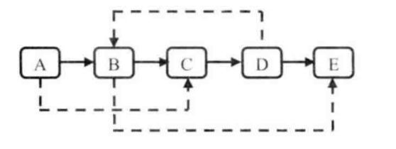

原理
AAC原始码流是一个一个ADTS进行分隔，同步字为0xfff
AAC码流解析的步骤就是首先从码流中搜索0x0FFF，分离出ADTS frame；然后再分析ADTS frame的首部各个字段。

可以从H.264码流中分析得到它的基本单元NALU，并且可以简单解析NALU首部的字段。通过修改该程序可以实现不同的H.264码流处理功能。

每个NALU之间通过起始码进行分隔，起始码分成两种：0x000001（3Byte）或者0x00000001（4Byte）,如果NALU对应的Slice为一帧的开始就用0x00000001，否则就用0x000001。
H.264码流解析的步骤就是首先从码流中搜索0x000001和0x00000001，分离出NALU；然后再分析NALU的各个字段。本文的程序即实现了上述的两个步骤。

注：本文中声音样值的采样频率一律是44100Hz，采样格式一律为16LE。“16”代表采样位数是16bit。由于1Byte=8bit，所以一个声道的一个采样值占用2Byte。“LE”代表Little Endian，代表2 Byte采样值的存储方式为高位存在高地址中。

name="rjb";
unset name
本地变量
整个bash进程可以使用，name="rjb";
局部变量
当前的代码段，local name="qing";(local是关键字)
环境变量
当前shell的进程以及子进程export name="raojunbo";
export可新增，修改或删除环境变量，供后续执行的程序使用。export的效力仅及于该次登陆操作。也即是
位置变量：
//位置变量示例
name=${1};age=${2}; echo "姓名:${name} 年龄:${age}``;
执行脚本时./hello.sh rjb 28
如下是位置变量
${0}是脚本文件名,参数是从1开始的,且在执行脚本时，参数与参数之间要有空格
${?} 表示返回上一个命令执行状态的反回值,0表示成功，1表示执行结果，2然后是错误状态吗
${#} 表示参数的个数
${*} 表示参数列表,将所有的参数组成一个字符串
${@} 表示参数列表
${$} 获取当前shell的进程id
特别说明： $?,$#,$*,$@,$$,$raojunbo 。不过书写成加{}更好区分。
${变量名} 或者$变量名
单引号里都是原样输出，双引号里
name="rjb";
age=100;
info="姓名:${name}年龄:${age}";
echo $info;
方式二
name="rjb";
age=100;
info="姓名"${name}"年龄"${age};
echo $info;
name="raojunbo";
echo ${#name};
//从1到3的子串
name="raojunbo";
${name:1:3}
//从1开始直到最后
name="raojunbo";
${name:1}
字符串的操作是一个比价大的话题。在具体使用时可以查相关文档。知道基本的用法就可以了。
方式一:name=("404","andy","全班");
方式二：
name=();
name[0]="404"
name[1]="anddy"
name[2]="柚子
name=();
name[0]="1";
name[1]="2";
name={"404","anddy","全部"}
echo ${name[1]}
echo ${name[@]}<!--输出所有数据-->
特别说明
@ 是一个一个输出
* 是组成一个字符串后输出
${#name[@]}表示取数组的全部个数，#表示取数目
#表示取长度或者数目
./文件名.sh 参数1 参数2 参数3
${0};表示文件名称
${1};表示参数1
${2};表示参数2
$#:表示传进来脚本的参数个数

Y,U,V是单独存储的方式。所以很容易处理。
为节省带宽起见，大多数YUV格式平均使用的每像素位数都少于24位。主要的抽样（subsample）格式有YCbCr4:2:0、YCbCr4:2:2、YCbCr4:1:1和YCbCr4:4:4。YUV的表示法称为A:B:C表示法：
4:4:4表示完全取样。
4:2:2表示2:1的水平取样，垂直完全采样。
4:2:0表示2:1的水平取样，垂直2：1采样。
4:1:1表示4:1的水平取样，垂直完全采样。

RGB的存储存储是一个RGB一个RGB来存的。所以对于图像的处理不太好处理。

参考博客视音频编解码技术零基础学习方法
音频的裸数据格式就是脉冲编码调制PCM数据。
PCM数据数字化：位深度，采样率，声道数。
wav:wav就是在pcm数据外面加上一层头
mp3:压缩比较高
aac:文件更小，质量更高
AVI
FLV
MP4
MOV
WMV
MKV
RMVB
就是把视频数据和音频数据打包成一个文件的规范
MPEG
H.264
I帧，帧内编码
p帧，前向预测编码
B帧，双向预测内插编码帧
这个地方不太理解。fdsatsa
YUV
RGB
ffmpeg视频转码
mp4->mov,mov->mp4,wmv->mp4
命令格式 ffmpeg -i {指定输入文件路径} -b:v {输出文件路径}
金融市场威科夫交易法笔记


AR出现在SC之后，其意义是接盘的人把部分筹码又抛掉了，目的是设立一个用来收购的最高成本界限。在期货市场里时空头回补，做空的看价格大幅下跌，反手多，促使价格上涨
这个二次测试是对恐慌抛售的二次测试
在很多情况下都会有二次测试。在吸筹阶段低量的二次测试会是成功的。说明供应减少，说明市场跌无可跌。
震仓也需要二次测试，即二次测试对震仓的确认
在震仓之后，SOS是吸筹结束的标志，表明需求开始主导市场
SOS的表现是一根长阳或者连续几根阳线，伴随明显增高的成交量.
在SOS之后，我们不知道是否还有供应会再次把价格压下来，这个时候就需要LPS进行测试。LPS是对SOS的确认。
当价格接近目标价位的时候，一部分大资金尝试出货，看其他大资金是否同意。
BC的出现证实了大资金的继续出货
抢购高潮后，会出现自然回落。自然回落，然后强力反弹很可能就时CM建立的派发底。构建派发平台。
上涨无力，无量。接下来将是深度回调或是牛市终结
抢购高潮后，会出现回落，接下来要看需求保持力度的结果是否全部吸收了市场上的供应。当公众被套的越来越多。买家就越来越少，价格会慢慢趋于平缓。为了测试需求的力度，制造UTAD
急跌确认了UTAD，从而确认了市场进入派发阶段的事实
LPSY特征，小碎步上涨，伴随递减的成交量
SOW之后，价格出现无力反弹LPSY,派发进入尾声。这是CM最后一批出货了。随即撤掉出货支撑板，开始进入下跌。
趋势的建立是在趋势线的上下沿（需求线与供给线）在配合成交量来判定
突破涨幅减弱：每次回落后的上涨的幅度都比以前上涨的幅度减弱。那么就时有问题的。若果后面的上涨幅度小，且成交量较大，说明需求还在，但供应在扩大，阻止了上涨的幅度。
回落50%原则：一次的回落不能超过50%。如果超过50%，看价格是否恢复到本次回落的50%之上（既回落的50%），若果没有上攻到回落的50%，则说明需求耗尽（没有恢复的力气了）。如果上攻回到回落的50%之上，或者突破新高，成交量巨大，立刻停止上涨，说明买方的力量努力没有结果，反而遇到更多供应（这种情况一般是公众受利好刺激，而CM利用这个刺激出货），这种情况看接下来看价格是否大幅带量下跌，然后无力反弹（需求耗尽）。可以在这里进场做空。
上升趋势中的低量回调，是少部分获利盘出现供给。如果是较大的成交量，就不是获利盘出货，而是CM派发了。
普通震仓发生在上升趋势中，由于消息的影响，市场出现恐慌出现的震仓，震仓结束后立刻反弹
发生在吸筹过程中，它的作用是确认吸筹的存在
价格走到冰线附件时，供应减弱，需求扩大，说明新的CM涌入，市场很可能回到交易区间。
价格大幅突破UT顶部，幷伴随扩大的成交量，说明需求吸收了全部供应。
统计一个数字在排序数组中出现的次数。例如输入排序数组{1，2，3，3，3，3，4，5}和数字3。由于3在这个数组中出现了4次。因此输出4；
给定一颗叉树的搜索树，请找出第k大的节点。
中序遍历就可以了
输入一颗二叉树的根节点，求该树的深度。从根节点到叶节点依次经过的节点形成树的一条路径，最长路径的长度为树的深度。
输入一颗二叉树的根节点，判定该树是不是平衡二叉树。如果某二叉树中任意节点的左，右子树的深度相差不超过1，那么它就是一颗平衡二叉树。
一个整型数组里除两个数字之外，其他数字都出现了两次。请写程序找出这两个只出现一次的数字。要求时间复杂度时O(n),空间复杂度是O(1);例如{2,4,3,6,3,2,5,5}
在一个数组中除一个数字只出现一次之外，其他数字都出现了三次。请找出那个只出现一次的数字。
输入一个递增排序的数组和一个数字s，在数组中查找两个数，使得它们的和正好是s,若果有多对数字的和等于s，则输出任意一对即可。
思路1
一个一个遍历相加试探。时间复杂度o()n2
思路2
一个个遍历，后面的有序的进行二分查找s - c的数。时间复杂度o(n*logn)
思路3
采用两个指针，头指针，尾指针，相加大于s时，尾指针向前移动。小于s将头指针向后移动。知道找到为止。时间复杂度O(n)
输入一个正数s,打印出所有和为s的连续正数序列。例如输入15,由于1+2+3+4+5 = 4+5+6=7+8 = 15,所以打印出3个连续序列1~5,4~6,和7~8;
思路
从头开始，逐个比较，直到只有两个相加大于s为止。时间复杂度是O(s2);
优化思路
用两个指针，头，尾，尾向后移动大于s时，去掉头，小于s时，增加尾。直到位编程s/2为止。
输入一个英语句子，翻转句子中单词的顺序，但单词内字符顺序不变。为简单起见，标点符号和普通字母一样处理。例如输入字符串"I am a student"，则输出"student. a am i".
思路
先将每个单词翻转，在将整个翻转。整个在与代码的实现。
给定一个数组和滑动窗口的大小，请找出所有滑动窗口里的最大值。
例如，如果输入数组{2，3，4，2，6，2，5，1}及滑动窗口的大小3,那么一共存在6个滑动窗口，它们的最大值分别为{4，4，6，6，6，5}。
思路
从上面来看，滑动窗口就是一个队列。我们可以用一个双端的队列（即可以从头部出，也可以尾部弹出）。在向后移动时，要加入的元素比前一个元素的值大时，将前面的元素移除。将后面的元素加入。如果要小，不将后面的值放入队列。每次比较时候，都要判定，头部元素是否还在窗口的范围里。
请定义一个队列并实现函数max得到队列里的最大值，要求函数max,push_back和pop_front的时间复杂度都是o(1)
思路
和上面的思路一样
把n个骰子扔在地面上，所有骰子朝上一面的点数之和为s。输入n，打印出s的所有可能的值出现的概率。
请完成一个函数，输入一颗二叉树，该函数输出它的镜像。
思路
遍历时，交换左右子树。然后递归的去交换子树就可以了。直到root为null
请实现一个函数，用来判断一颗二叉树是不是对称的。如果一颗二叉树和他的镜像一样，那么它是对称的。(LeetCode 101. Symmetric Tree)
思路
用前序遍历时时“根左右”，通过观察与“根右左”的在对称的二叉树序列是一样的。哈哈。在定义三种遍历方式时，都是针对于根的。没有定义左于右的顺序。
不过这个递归表达是由点难想到。
输入一个矩阵，按照从外向里以顺时针的顺序依次打印出每一个数字。例如输入如下矩阵

思路
可以将矩阵分圈打印。那么难点在于边界条件的判定。
定义栈的数据结构，请在该类型中实现一个能够得到栈的最小元素的min函数。在该栈中调用min,push及pop的时间复杂度O(1)
思路
入栈比较，是最小值入栈，不是最小值，将栈重新入栈。这样每出栈时，辅助栈也会出栈。
输入两个整数序列，第一个序列表示栈的压入顺序，请判断第二个序列是否为该栈的弹出顺序。假设压入栈的所有数字均不相等。例如，序列{1，2，3，4，5}是某栈的压栈序列，序列{4，5，3，2，1}是该压栈序列对应的一个弹出序列，但{4，3，5，1，2}就不可能是该压栈序列的弹出序列。
思考
可以模拟入栈与出栈的过程，待输入序列是1,2,3,4,5,待输出序列是4,5,3,2,1,则，对入栈一直入栈，当发现即将要入栈的元素与输出序列的元素相等时，入栈并出栈这个元素。头部元素与输出序列的下一个比较，相等则出栈。不相等就将下一元素入栈。发现头部元素与待书序序列不等，且与即将输入的元素不等时，即不是其输出序列。
从上到下打印出二叉树的每个节点，同一层的节点按照从左到右的顺序打印。例如，输入图4.6中的二叉树，则依次打印出8,6,10,5,7,9,11。
思路（我的）
就是二叉树的层序遍历。
层序遍历的实现，根入队列，出队列时将其左，右节点入队列。知道最终队列为空。
从上到下打印二叉树,同一层的节点按从左到右的顺序打印，每一层打印到一行。
思路
与上面的相同，只是需要找到如何去标记换行的问题。
换行的问题，可以记录入已经在本行打印了的，记录下一行要打印的个数。
实现一个函数按照之字形顺序打印二叉树，即第一行按照从左到右的顺序打印，第二层按照从右到左的顺序打印，第三行在按照从左到右的顺序打印，其他行以此类推。
思路（哈哈，这个是我自己想出来的哟）
和上面的思路类似。只是为了保证打印时的顺序按照所需要的。搞两个栈，一个正序入栈，一个逆序入栈。相互交换着输出。
输入一个整数数组，判断该数组是不是某二叉搜索树的后序遍历结果。如果是则返回true,否则返回false.假设输入的数组的任意两个数字都互不相同。例如，输入数组{5，7，6，9，11，10，8}，则返回true,因为这个整数序列是图4.9二叉搜索树的后序遍历结果。如果输入的数组时{7,4,6,5},则由于没有哪棵二叉搜索树的后序遍历结果是这个序列，因此返回fasle;
思路（我自己分析出来的）
思考过程，刚开始的确没有思路，从二叉搜索树的特征来看，每个节点的左边小于根节点，每个节点的右边大于根节点。所以可以找到整个序列的根节点。然后找出左子树与右子树。在分别对左右子树看其是否左子树元素都小于根，右子树都大于根。
测试用例
完全二叉树，只有左子树，只有右子树，只有一个节点，空树等。
输入一棵二叉树和一个整数，打印出二叉树中节点值的和为输入整数的所有路径。从树的根节点开始往下一直到叶节点所经过的节点形成一条路径。
思路
要寻找某一条路径。明显的找到根节点然后尝试添加为和。知道根节点。在外部维持一个栈，访问元素时，添加栈，退出递归时将元素移除栈。在刚好和的值与要找的相等时，刚好栈里就是路径。
测试用例
如果有多个路径能支持的情况
在中间值，就已经找到了
在叶子节点才找到
请实现函数复制复杂链表。在复杂链表中，每个节点除了有一个m_pNext指针指向下一个节点，还有一个m_pSibling指针指向链表中的任意节点或者null;
思路
我的思考，先将主要的链条连接起来。然后将次要链条连接。那么思考在次要链表的链接上实际可能的花废O(n2);
优化思路1
基于以上思路，o(n2)的花费主要是寻找其他节点位置上。可以用hasn表存储
这样解决的办法是用空间换时间。
优化思路2(这种)
对于优化思路1的空间问题，我们要实现不用辅助空间的情况下实现O(n);


输入一颗二叉搜索树，将该二叉搜索树转换成一个排序的双向链表。要求不能创建任何新的节点，只能调整树中节点指针的方向。
思路
因为二叉的特性。根节点一定大于左子树的所有节点，根节点一定小于右子树的所有节点。要将其换成双向链表。首先弄成单向链表。将子树的右子树移动到根节点的右上。左子树移动到父节点的右下。递归进行。
请实现两个函数，分别用来序列化和反序列化二叉树
思考
二叉树的序列化，就是保证序列化后的唯一。要保证唯一。可以保存先序遍历，在保存中序遍历。这样可以恢复二叉树。
优化思路（这种思路较好，用特殊字符代表null，是我没想到的）
上面的过程需要将两个序列化都读取后才能进行恢复。我们可以根据前序遍历的顺序来序列化二叉树，因为前序遍历是从根节点开始的。在遍历二叉树碰到null指针时，这些null指针序列化为一个特殊的字符。
输入一个字符串，打印出该字符串中字符的所有排列。例如输入字符串abc,则打印出字符a,b,c所能排列出来的所有字符串，abc,acb,bca,cab,cba;
思路（思想很重要）
通过上面的排列，可以将其分成以a开头的，以b开头的，以c开头的，然后分别后面的进行排列，重复这个过程。
即将问题转换成子问题。同过子问题的递归。